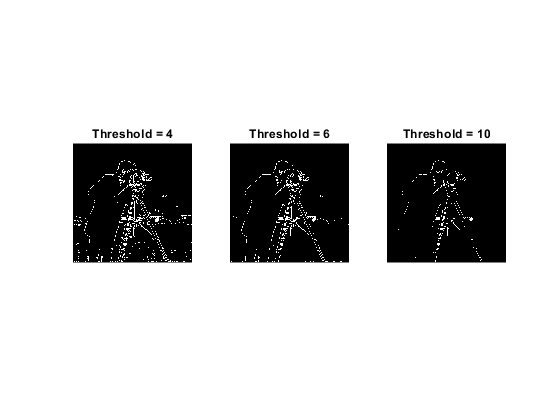
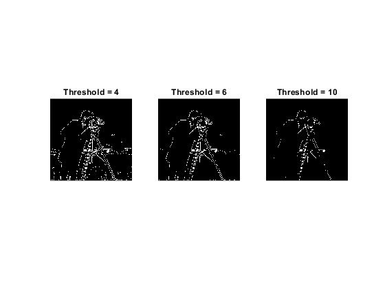
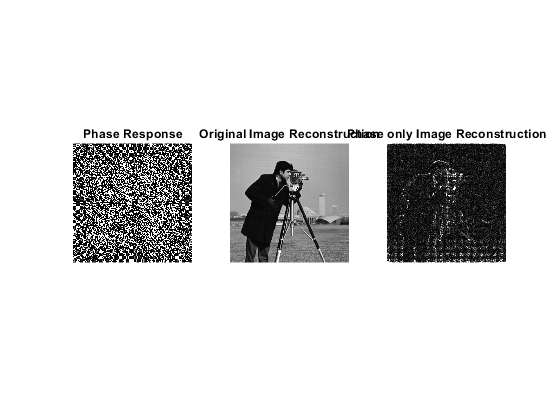

Contents
- Image and Video Processing Assignment - 2
- Question 1: The Maar Edge Detector
- Gaussian Blur Matrix
- Laplacian of Gaussian Matrix
- Convolution of Matrices
- Zero Crossing Detector
- Maar Edge Detector
- Question 2: Canny Edge Detection
- Gradient of an image
- Nonmax supression
- Thresholding
- Canny Edge Detector
- Canny Edge Results
- Question 3: Phase only reconstruction
- Discrete Fourier Transform
- Log Transformation
- Phase only reconstruction
%NAME: Vatsalya Chaubey %INST: IIT, Bhubaneswar %DATE: 19.09.2020 %CATEGORY: Btech %BRANCH: Electronics and Communication %Roll Number: 17EC01044
Image and Video Processing Assignment - 2
clc; clear all; close all;
Question 1: The Maar Edge Detector
% I will first create the functions which are needed for implementation in % other parts of the code. Finally, the entire code will be written % together to detect the edges.
Gaussian Blur Matrix
% Function to calculate the Gaussian matrix for a given value of standard % deviation function [blur] = gaussian_blur(sigma) % sigma: The std deviation of the gaussian kernel used % Find the filter dimension using the 6*sigma rule as the majority of % the gaussian is filter_dims = ceil(6*sigma); if mod(filter_dims,2)==0 filter_dims = filter_dims + 1; end blur = zeros(filter_dims, filter_dims); centre_x = ceil(filter_dims/2); centre_y = ceil(filter_dims/2); for i=1:filter_dims for j=1:filter_dims x = i - centre_x; y = j - centre_y; blur(i,j) = exp(-1*(x^2 + y^2)/(2*sigma^2))/(2*pi*sigma^2); end end end
Laplacian of Gaussian Matrix
% Function to calculate the Laplacian of Gaussian matrix for a given value of standard % deviation function [blur] = LOG_filter(sigma) % sigma: The std deviation of the gaussian kernel used filter_dims = ceil(6*sigma); if filter_dims%2==0 filter_dims = filter_dims + 1; end blur = zeros(filter_dims, filter_dims); centre_x = ceil(filter_dims/2); centre_y = ceil(filter_dims/2); for i=1:filter_dims for j=1:filter_dims x = i - centre_x; y = j - centre_y; blur(i,j) = exp(-1*(x^2 + y^2)/(2*sigma^2))*((x^2 + y^2 - 2*sigma^2)/(2*pi*sigma^6)); end end end
Convolution of Matrices
% Function to convolve an image with a filter. This is done assuming that % the filter size is odd. function [oimg] = convolve(img, filter) % img: input image % filter: filter for convolution [frow, fcol] = size(filter); [irow, icol] = size(img); % The dimensions of the final image oimg = zeros(irow - frow + 1, icol - fcol + 1); for i=1 + floor(frow/2) : irow - floor(frow/2) for j=1 + floor(fcol/2) : icol - floor(fcol/2) % Calculating the image section on which the filter will be % multiplied x_start = i - floor(frow/2); y_start = j - floor(fcol/2); x_end = i + floor(frow/2); y_end = j + floor(fcol/2); img_section = img(x_start:x_end, y_start:y_end); oimg(i - floor(frow/2),j - floor(fcol/2)) = sum(sum(img_section.*filter)); end end end
Zero Crossing Detector
% Function to calculate the zero crossings based on the number of edges and % the threshold function [oimg] = zero_crossing(img, thresh) % img: input image oimg = zeros(size(img)); [row, col] = size(img); for i=2:row-1 for j=2:col-1 % checking for vertical zero crossings count = 0; if(img(i-1,j) * img(i+1,j)<0 && abs(img(i-1,j) - img(i+1,j))>thresh) count = count + 1; end % checking for horizontal zero crossings if(img(i,j-1) * img(i,j+1)<0 && abs(img(i,j-1) - img(i,j+1))>thresh) count = count + 1; end % checking for positive diagonal zero crossings if(img(i-1,j-1) * img(i+1,j+1)<0 && abs(img(i-1,j-1) - img(i+1,j+1))>thresh) count = count + 1; end % checking for negative diagonal zero crossings if(img(i-1,j+1) * img(i+1,j-1)<0 && abs(img(i-1,j+1) - img(i+1,j-1))>thresh) count = count + 1; end if count>=2 oimg(i,j) = 255; end end end end
Maar Edge Detector
% Read the input image as a double orig_img = imread('cameraman.tif'); img = double(orig_img); % The std deviation of the LOG filter std_dev = 0.9; filter = LOG_filter(std_dev); % We need to pad the image with zeros such that after convolution the size % of the image is not reduced. pad = size(filter,1) - 1; padded_img = padding(img, pad, pad, 0); % Convolve with the filter out = convolve(padded_img, filter); % To detect the edges we need to detect the zero crossings edges0 = zero_crossing(out, 0); edges4 = zero_crossing(out, 4); edges6 = zero_crossing(out, 6); edges10 = zero_crossing(out, 10); figure('Name', 'Maar Edge Detector'); subplot(131) imshow(orig_img); title('Original Image'); subplot(132) imshow(out); title('Convolution with LOG filter (Std dev = 0.9)'); subplot(133) imshow(edges0); title('Threshold = 0'); figure('Name','Edges for different thresholds'); subplot(131) imshow(edges4); title('Threshold = 4'); subplot(132) imshow(edges6); title('Threshold = 6'); subplot(133) imshow(edges10); title('Threshold = 10'); % Repeating the same set with different std dev % The std deviation of the LOG filter std_dev = 2; filter = LOG_filter(std_dev); % We need to pad the image with zeros such that after convolution the size % of the image is not reduced. pad = size(filter,1) - 1; padded_img = padding(img, pad, pad, 0); % Convolve with the filter out = convolve(padded_img, filter); % To detect the edges we need to detect the zero crossings edges0 = zero_crossing(out, 0); edges4 = zero_crossing(out, 4); edges6 = zero_crossing(out, 6); edges10 = zero_crossing(out, 10); figure('Name', 'Maar Edge Detector'); subplot(131) imshow(orig_img); title('Original Image'); subplot(132) imshow(out); title('Convolution with LOG filter (Std dev = 2)'); subplot(133) imshow(edges0); title('Threshold = 0'); figure('Name','Edges for different thresholds'); subplot(131) imshow(edges4); title('Threshold = 4'); subplot(132) imshow(edges6); title('Threshold = 6'); subplot(133) imshow(edges10); title('Threshold = 10');
 
 Question 2: Canny Edge Detection
% Creating other needed functions
Gradient of an image
% Returns the Sobel gradient kernel function [grad_filter] = grad_filter(x_y) % dir: the direction in which gradient is to be calculated % Assuming the direction is X grad_filter = [-1,0,1;-2,0,2;-1,0,1]; if (x_y=='Y') grad_filter = grad_filter'; end end
Nonmax supression
% Performs nonmax supression on an image given its gradient function [supressed] = nonmax_supression(mag, angle) % mag: The magnitude of the image gradient % phase: The phase of the image gradient supressed = zeros(size(mag)); [row, col] = size(mag); for i=2:row-1 for j=2:col-1 l = 255; m = 255; ang = angle(i,j); if ((ang<22.5) || (ang>157.5)) l = mag(i,j-1); m = mag(i,j+1); elseif ((ang>=22.5) && (ang<67.5)) l = mag(i-1,j-1); m = mag(i+1,j+1); elseif ((ang>=67.5) && (ang<112.5)) l = mag(i-1,j); m = mag(i+1,j); elseif ((ang>=112.5) && (ang<157.5)) l = mag(i-1,j+1); m = mag(i+1,j-1); end if (mag(i,j)>l && mag(i,j)>m) supressed(i,j) = mag(i,j); else supressed(i,j) = 0; end end end end
Thresholding
% Thresholding after nonmax supression function [output] = thresholding(img, thresh1) % img: The input image % thresh1: The higher threshold img(img>thresh1) = 255; img(img<thresh1) = 0; output = img; end
Canny Edge Detector
function [final] = Canny_edge(img, std_dev,thresh) % std_dev: The standard deviation of Gaussian kernel % thresh1: Higher threshold for dual thresholding % thresh2: Lower threshold for dual thresholding filter = gaussian_blur(std_dev); % We need to pad the image with zeros such that after convolution the size % of the image is not reduced. pad = size(filter,1) - 1; padded_img = padding(img, pad, pad, 0); blurred = convolve(padded_img, filter); % Calculating gradients g_x = grad_filter('X'); g_y = grad_filter('Y'); % Pad the blurred image again blurred = padding(blurred,2,2,0); G_x = convolve(blurred, g_x); G_y = convolve(blurred, g_y); G = sqrt(G_x.^2 + G_y.^2); theta = atan2(G_y, G_x) * 180/pi; % Fixing the negative angles for ease of calculation theta(theta<0) = theta(theta<0)+180; % Performing Nonmax supression supressed = nonmax_supression(G,theta); % Performing hystersis thresholding final = thresholding(supressed, thresh); end
Canny Edge Results
Read the input image Read the input image as a double
orig_img = imread('cameraman.tif'); img = double(orig_img); output4 = Canny_edge(img, 0.4, 200); output30 = Canny_edge(img, 3, 20); figure('Name', 'Canny Edge Detector'); subplot(131) imshow(orig_img); title('Original Image'); subplot(132) imshow(output4); title('Threshold=200, Std dev=0.4'); subplot(133) imshow(output30); title('Threshold=20, Std dev=3');
Question 3: Phase only reconstruction
% Here, again we will write the dft and idft functions
Discrete Fourier Transform
% The function to calculate the Discrete Fourier Transform of an image function [fourier2D] = dft2D(img) % img: The image for which fourier is to be calculated M = size(img,1); N = size(img,2); % Performing 2D fourier transform as two successive 1D transforms as once % over the rows and the other one over the columns % First, over rows. Creating a _N_*_N_ weight matrix as we are taking a % N-point DFT n = -(N-1)/2:1:(N-1)/2; k = -(N-1)/2:1:(N-1)/2; weight_row = n' * k; weight_row = (-2*pi*1i/N) .* weight_row; weight_row = exp(weight_row); % Secondly, now taking M-point DFT across the columns m = -(M-1)/2:1:(M-1)/2; k = -(M-1)/2:1:(M-1)/2; weight_col = m' * k; weight_col = (-2*pi*1i/M) .* weight_col; weight_col = exp(weight_col); % Taking M-point DFT of the previous N-point DFT fourier2D = weight_row * (img * weight_col); end
Log Transformation
% Function to calculate the log transformation function [log_transformed] = log_transformation(magn, scale) % magn: The magnitude of image whose log transform is to be calculated % scale: Scaling Factor log_transformed = log10(1 + magn) * scale; end
Phase only reconstruction
Read the input image Read the input image as a double
orig_img = imread('cameraman.tif'); img = double(orig_img)/255; fourier = dft2D(img); magn = abs(fourier); phase = atan2(imag(fourier), real(fourier)); phase_res = exp(1i * phase); % Log transformed output log_transformed = log_transformation(magn, 0.2); % Original image reconstruction orig = idft2D(fourier); % Phase only reconstruction phase_reconstruct = mat2gray(abs(idft2D(phase_res)))*30; figure('Name', 'Fourier'); subplot(131) imshow(orig_img); title('Original Image'); subplot(132) imshow(magn); title('Magnitude Response'); subplot(133) imshow(log_transformed); title('Log Transformed'); figure('Name', 'Reconstruction'); subplot(131) imshow(phase); title('Phase Response'); subplot(132) imshow(abs(orig)); title('Original Image Reconstruction'); subplot(133) imshow(phase_reconstruct); title('Phase only Image Reconstruction');